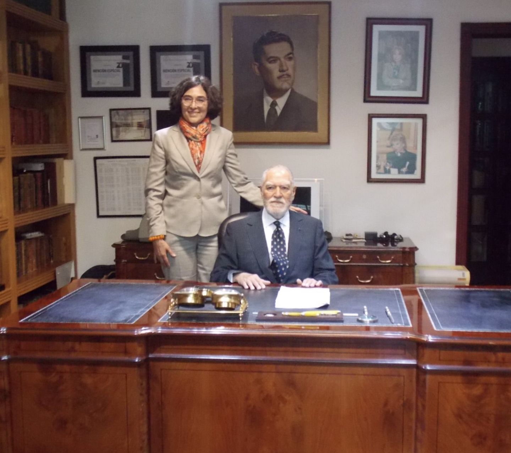

Notarías 15 y 95 CDMX
Con más de 50 años de brindar servicios notariales dentro de un marco ético y profesional con un trato siempre cálido y amable.

Con más de 50 años de brindar servicios notariales dentro de un marco ético y profesional con un trato siempre cálido y amable.
Conformado hoy en día por el Dr. Eduardo García Villegas, Notario 15 CDMX; la Mtra. Olga Mercedes García Villegas Sánchez Cordero, Notaria 95 CDMX, quienes, investidos de fe pública por el Estado, brindan seguridad jurídica y certeza en los actos y hechos de los que dan fe, manteniendo siempre un alto nivel de profesionalismo, una total imparcialidad con los prestatarios del servicio y una plena autonomía en sus decisiones, las cuales sólo tienen por límite el marco jurídico y el estado de derecho.

Prado Sur 225
Lomas De Chapultepec, Miguel Hidalgo, Ciudad de México

Estandarizamos y documentamos nuestros procesos para mejorar continuamente la calidad de los servicios que brindamos a nuestros clientes.
Contamos con un Sistema de Gestión de Calidad certificado por AENOR bajo los criterios de la norma internacional ISO9001:2015 desde 2018.
Brindar servicios notariales y asesoría de calidad, aportando conocimientos y experiencia a nuestros clientes, garantizando en todos nuestros instrumentos notariales, seguridad jurídica para la construcción de un estado de derecho.
Conservar y capitalizar el prestigio logrado a lo largo de siete décadas para mantener y atraer nuevos clientes, a través de la actualización y capacitación constante y permanente que se refleje en la prestación de un servicio de excelencia.
Es la razón de ser de las notarías y es la prioridad de nuestro trabajo, cumplimos con los compromisos establecidos dentro de los plazos definidos con altos estándares de calidad y servicio.
Actuamos con total apego a la ética, legalidad y principios deontológicos en todas las actividades que realizamos.
Somos un equipo interdisciplinario que opera de manera articulada y eficiente para el logro de un objetivo común, compartiendo información y conocimiento.
Cumplimos cabalmente nuestros compromisos. Asumimos plenamente las consecuencias de nuestros actos. Agregamos valor en todo lo que hacemos.
Identificamos oportunidades y mejores prácticas para superar nuestro desempeño con innovación, tecnología y actualización permanentes.
A las ideas, a las personas, al trabajo realizado por otros.
Respetamos a nuestros compañeros de trabajo y el trabajo realizado por ellos. Desarrollamos nuestras actividades en un entorno.
Brindar servicios notariales, garantizando el total y estricto cumplimiento de los ordenamientos legales aplicables, que den certeza, certidumbre y seguridad jurídica de los actos que se dan fe, apegados a los más altos principios de ética de negocios contando para ello con personal altamente calificado.
Satisfacer las necesidades de nuestros clientes, cumpliendo o incluso superando sus requerimientos y expectativas.
Realizar todas las actividades apegados a lo establecido en nuestro sistema de calidad, cumpliendo los requisitos de la norma ISO9001:2015 con un enfoque de cero defectos y cero desperdicios identificando oportunidades mejora que nos permitan operar con efectividad y eficiencia.
Todos los niveles de nuestra organización estamos comprometidos en la consolidación una Cultura de Excelencia en todo lo que hacemos.